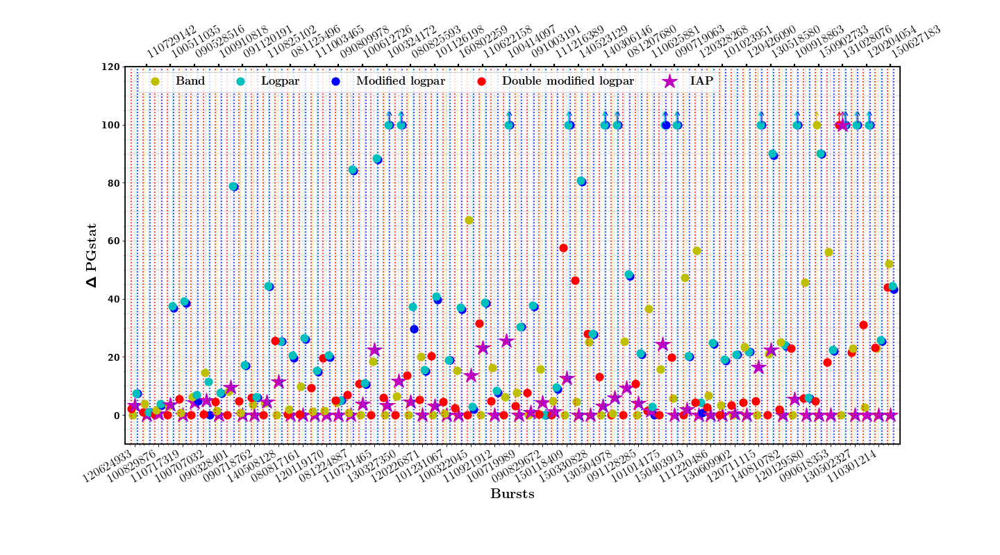

2020
M. Yassine, F. Piron, F. Daigne, R. Mochkovitch, F. Longo, N. Omodei and G. Vianello — A new fitting function for GRB MeV spectra based on the internal shock synchrotron model
A&A, 640, A91 (2020) · First-author publication
Developing a compact spectral-fitting function derived from internal-shock synchrotron simulations, and confronting it directly with Fermi observations of bright gamma-ray bursts.

The prompt emission of gamma-ray bursts is commonly described with empirical functions such as the Band model. My work aimed to bring more physical information into spectral fitting by using synthetic spectra produced by a detailed internal-shock model in which synchrotron radiation dominates the MeV emission.
I used these simulated spectra to develop a four-parameter fitting function, called the Internal Shock Synchrotron Model (ISSM) function. The objective was to retain the characteristic spectral shape predicted by the physical model while providing a compact function that could be fitted efficiently to real GRB observations.
To validate the method, I simulated how the theoretical spectra would be observed by the Fermi instruments and fitted the resulting count spectra. The ISSM function was then applied to a sample of 74 bright gamma-ray bursts detected by Fermi/GBM and compared with commonly used phenomenological spectral models.
Beyond fit quality, the analysis allowed the observed spectral shapes to be compared directly with predictions from the internal-shock synchrotron model. The observed GRB spectra were systematically broader than the synthetic synchrotron spectra, providing a quantitative test of the physical scenario and pointing toward possible improvements in the modelling of shock microphysics and radiative processes.
A&A, 640, A91 (2020) · First-author publication